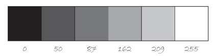

00 — Getting Started: How Computer Graphics Work
Grayscale colour
A grayscale colour has no hue at all — it's a shade of pure grey, from black to white, with red, green and blue all set equal to each other. Because all three numbers are always the same, p5 (like most graphics tools) accepts a single number as shorthand for "that much grey":
fill(0); // black — the same as fill(0, 0, 0)
fill(128); // mid-grey — the same as fill(128, 128, 128)
fill(255); // white — the same as fill(255, 255, 255)
background(230); // a light grey background — you've already seen this shorthand in sketch 01
Figure: six grayscale shades, each labelled with the single number that produces it — 0 is
black, 255 is white, and everything between is a step along the same red-equals-green-equals-blue
line.
Figure: a photo using only grayscale shades — no hue anywhere in the image, just varying brightness from black to white. Every pixel here still has red, green and blue values; they're just always equal to each other.